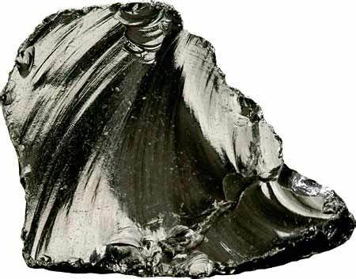

Rhyolite: The Fine-Grained Volcanic Rock
Chemical Formula: Variable (Silica-rich, primarily SiO₂)
Color: Commonly light-colored; pink, gray, white, yellow, light brown, and sometimes red
Hardness: 6-7 on the Mohs scale
Texture: Fine-grained (Aphanitic) to Porphyritic
Formation: Extrusive volcanic activity (Rapid cooling of high-silica magma)
Localities: United States, New Zealand, Iceland, Germany, Mexico, Argentina
Common Uses: Construction, Decorative Stone, Sculptures, Abrasives, Road Aggregate
Rhyolite is an extrusive igneous rock formed from the rapid cooling of high-silica magma at or near the Earth’s surface during volcanic eruptions. It is the volcanic equivalent of granite, sharing a similar chemical composition but differing in texture due to its formation process. While granite forms underground (intrusive), rhyolite solidifies from lava above or near the surface, which cools much faster, resulting in its fine-grained or aphanitic texture.
Rhyolite often appears in light colors such as pink, gray, white, and light brown, though it can sometimes be red or yellow depending on its mineral content. It is known for containing quartz, feldspar, and minor amounts of biotite or amphibole. In some cases, rhyolite may contain large crystals embedded in a fine-grained matrix, giving it a porphyritic texture. This combination of rapid cooling and high silica content makes rhyolite a durable and versatile rock.
Formation and Types of Rhyolite
Rhyolite forms as a result of extrusive volcanic activity, specifically when silica-rich magma erupts onto the Earth’s surface. The magma, with its high viscosity, cools rapidly, preventing the formation of large crystals. The exact composition of rhyolite can vary depending on the magma's original mineral content and the environment of deposition, but it typically contains 70-80% silica.
Key Types of Rhyolite:
1. Aphanitic Rhyolite

Aphanitic rhyolite has a very fine-grained texture, meaning that its mineral crystals are too small to be seen without a microscope. This texture results from the rapid cooling of lava, which inhibits crystal growth. Aphanitic rhyolite often appears uniform in color and texture.
2. Porphyritic Rhyolite

Porphyritic rhyolite contains larger, well-formed crystals (called phenocrysts) embedded in a fine-grained matrix. The phenocrysts usually consist of quartz, feldspar, or mica, giving the rock a unique texture where individual crystals are visible to the naked eye. The presence of these phenocrysts indicates that the magma underwent two stages of cooling—slow cooling underground followed by rapid cooling after eruption.
3. Flow-Banded Rhyolite

Flow-banded rhyolite forms when the molten rock flows as it cools, causing the minerals to align in thin, parallel bands. This flow-banding gives the rock a distinctive appearance, often with wavy or swirled patterns of different colors. Flow-banded rhyolite is common in volcanic regions and can serve as a beautiful decorative stone.
4. Glassy Rhyolite (Obsidian)
If rhyolite cools extremely quickly, it may not have time to crystallize, resulting in the formation of volcanic glass known as obsidian. Obsidian is typically dark in color, but it can sometimes have a lighter or reddish hue if it contains gas bubbles or iron oxide.
Structure and Properties of Rhyolite
Rhyolite’s physical properties vary depending on its formation process and texture, but several key characteristics define the rock:
- Fine-Grained Texture: Most rhyolite has an aphanitic texture, meaning the grains are too small to be seen without magnification. In porphyritic varieties, larger phenocrysts are visible within the fine-grained matrix.
- Hardness: Rhyolite has a hardness of 6-7 on the Mohs scale, making it relatively resistant to abrasion and suitable for use in construction and road aggregate.
- Silica-Rich Composition: Rhyolite is composed primarily of silica (SiO₂), making it chemically similar to granite and other felsic rocks. The high silica content contributes to the viscosity of the magma from which it forms.
- Porosity: Rhyolite can vary in porosity. Some rhyolites, particularly those formed from explosive volcanic eruptions, may have a vesicular texture with small gas bubbles trapped within the rock. This can make the rock lighter and less dense.
- Durability: Due to its hardness and silica content, rhyolite is highly durable and resistant to weathering. It is used in construction projects where long-term durability is required.
Uses of Rhyolite

Rhyolite’s durability and attractive appearance make it useful in a variety of applications, both industrial and decorative.
1. Construction
Rhyolite is often used as aggregate in road construction and as a fill material in building projects. Its hardness and durability make it suitable for use in foundations, paving stones, and concrete production. Additionally, rhyolite blocks can be used as dimension stone in masonry and structural projects.
2. Decorative Stone
Polished rhyolite, particularly porphyritic or flow-banded varieties, is prized as a decorative stone for architectural and interior design projects. Its unique patterns and color variations make it an attractive option for flooring, wall cladding, countertops, and facades. In some cases, rhyolite is cut into slabs or tiles for use in high-end residential or commercial projects.
3. Sculptures and Art
Due to its fine grain and ability to take on a polished finish, rhyolite is sometimes used in sculptures and ornamental objects. Its distinct colors and patterns can add artistic value, particularly in carved bowls, vases, and abstract sculptures.
4. Abrasives
Rhyolite’s hardness and fine texture make it suitable for use as an abrasive in industrial processes. It can be ground into fine powder and used in polishing, grinding, or sanding applications, especially in the ceramics and stone industries.
5. Road Aggregate
Crushed rhyolite is widely used as road aggregate, especially in areas near volcanic regions. Its durability and hardness ensure that it provides a stable base for roads and highways, contributing to long-lasting infrastructure.
History of Rhyolite
Rhyolite has been used by humans for thousands of years, particularly in regions where volcanic activity is common. Its hard, durable nature made it a valuable resource for early civilizations.
Prehistoric Tools and Weapons
Like flint and obsidian, rhyolite was used by prehistoric peoples to create stone tools and weapons. The rock’s ability to fracture into sharp edges made it suitable for making arrowheads, scrapers, and knives. Rhyolite artifacts have been found at archaeological sites around the world, indicating its importance in ancient tool-making.
Ancient Civilizations
In ancient times, rhyolite was used in construction and for creating carved objects. Civilizations in Mesoamerica, New Zealand, and Iceland made use of locally available rhyolite for tools, building materials, and decorative items.
Modern Applications
Today, rhyolite is widely used in construction, particularly in volcanic regions where the rock is abundant. It is also valued as a decorative stone in architectural projects, and polished rhyolite is sometimes used in jewelry or small sculptures.
Famous Varieties of Rhyolite
Several notable varieties of rhyolite are recognized for their unique appearance or historical significance.
1. Yellowstone Rhyolite
The volcanic landscape of Yellowstone National Park in the United States is famous for its rhyolitic formations. The park’s Lava Creek Tuff and Huckleberry Ridge Tuff are examples of rhyolitic rock formed from massive volcanic eruptions. These formations are studied for their insights into volcanic processes and geologic history.
2. Bandelier Tuff
The Bandelier Tuff, located in New Mexico, is a rhyolitic volcanic deposit formed from pyroclastic flows during eruptions of the Jemez volcanic field. The tuff, composed of compressed volcanic ash and rhyolite fragments, has been used by indigenous peoples for centuries as a building material.
3. Toquima Range Rhyolite
The Toquima Range in Nevada, USA, contains a notable deposit of porphyritic rhyolite. This variety is characterized by large crystals of quartz and feldspar embedded in a fine-grained matrix, making it valuable for both decorative and industrial applications.
Quarrying and Sourcing of Rhyolite
Rhyolite is quarried in regions with volcanic activity, often found in extensive flows, domes, or tuff deposits. These deposits are mined for use in construction, decorative stone, and other industrial applications.
Notable Quarry Locations:
- United States: Rhyolite is quarried extensively in the western United States, particularly in Yellowstone and Nevada, where large deposits of rhyolite tuff are present.
- Iceland: Iceland’s volcanic landscape is rich in rhyolitic rock, which is used for both construction and research purposes.
- New Zealand: The Taupo Volcanic Zone is known for its rhyolitic formations, which are used in construction and as aggregate material.
- Germany: The Eifel volcanic field in Germany contains significant rhyolite deposits, which have been used historically for tools and construction.
Extraction Process
Rhyolite is typically extracted through quarrying, with large blocks or slabs being cut from volcanic formations. These blocks can be processed into smaller pieces for use as aggregate, or they may be polished and shaped for decorative uses. In some cases, rhyolite is ground into powder for use in abrasives or ceramics.
Caring for Rhyolite
Rhyolite requires minimal maintenance, but proper care can extend its lifespan and preserve its appearance:
- Cleaning: Rhyolite surfaces can be cleaned with a mild soap and water solution. Avoid using acidic or abrasive cleaners, which can damage the surface.
- Sealing: For outdoor or high-traffic applications, sealing rhyolite can prevent water absorption, staining, or damage from environmental exposure.
- Polishing: If rhyolite becomes scratched or dull over time, professional polishing can restore its shine, especially for countertops or decorative elements.
Environmental Considerations
Like other volcanic rocks, rhyolite is a natural resource that can be extracted with minimal environmental impact if done responsibly. However, quarrying rhyolite may cause habitat disruption and landscape changes. Sustainable quarrying practices, including land reclamation and waste minimization, are essential for reducing the environmental footprint of rhyolite extraction.
Rhyolite’s durability and longevity in construction projects also make it an environmentally friendly material, as it reduces the need for frequent replacements or repairs compared to less durable materials.